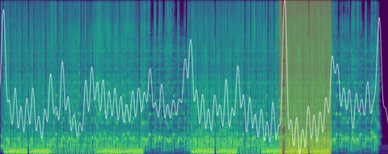

Трейлеры дают возможность быстро познакомиться с новой музыкой, чтобы решить, стоит ли погружаться в неё дальше. Трейлеры в Яндекс Музыке есть у треков, альбомов, плейлистов и исполнителей. Фрагмент для трейлера каждого трека выбирается на основе предсказаний нейросети. И в ваших итогах 2024 года тоже играл трейлер из любимых треков. О том, как создаются такие трейлеры, нашему каналу рассказал старший разработчик из команды Музыки Николай Глазырин.
Чтобы сделать трейлер для трека, нужно совсем немного: определить его начало и конец 🙂 Мы хотим, чтобы в трейлер попал самый яркий и узнаваемый законченный фрагмент трека. А ещё — чтобы фрагменты разных композиций могли плавно перетекать друг в друга.
Мы обучили модель, которая умеет предсказывать в треке одновременно границы тактов, позиции битов (по-русски их обычно называют тактовыми долями) и наилучшие моменты для начала трейлера. Это небольшой encoder-only-трансформер на 0,5М параметров, который принимает на вход аудио с частотой дискретизации 22050 Гц, а на выходе с шагом в 1/75 секунды предсказывает три числа: вероятность найти в этот момент бит, границу такта и начало подходящего для трейлера фрагмента. Для обучения мы используем нашу нейромузыку, несколько открытых датасетов с границами тактов и тактовых долей, а также небольшой собственный датасет с размеченными вручную позициями начала трейлера.
При обучении модель осваивает одновременное решение этих трёх задач. Можно заметить, что вся разметка состоит из каких-то позиций внутри трека и привязана к его темпу. Поэтому очень помогает во время обучения аугментировать данные путем ускорения-замедления аудио, чтобы модель не привязывалась к каким-то более популярным темпам.
Выходы модели мы сглаживаем полосовыми фильтрами, чтобы избавиться от лишнего шума. Диапазон частот для каждого выхода подобран отдельно, чтобы соответствовать разумному. Например, темп музыки обычно находится в диапазоне 50–200 ударов в минуту, поэтому и тактовые доли должны встречаться с примерно такой же частотой. В сглаженных выходах уже очень просто определить локальные максимумы, которые и отмечают интересующие нас моменты времени.
Для начала трейлера мы выбираем момент с максимальным значением на соответствующем выходе модели. Если в треке есть вокал (что проверяется другой моделью), то выбираем такой момент, чтобы в трейлере тоже был вокал. Конец трейлера ставим ровно через 8 тактов после начала. А чтобы трейлеры можно было красиво смиксовать, добавляем ещё небольшой фрагмент трека (1 такт) прямо перед началом. На этом фрагменте во время воспроизведения громкость плавно поднимается, а на последнем такте — наоборот, плавно затухает, что даёт плавный переход между трейлерами разных треков.
Наша модель маленькая, и поэтому достаточно быстрая, и при необходимости может работать даже на CPU. Это важно, поскольку в нашем каталоге десятки миллионов треков и ещё десятки тысяч добавляются каждый день.
ML Underhood
